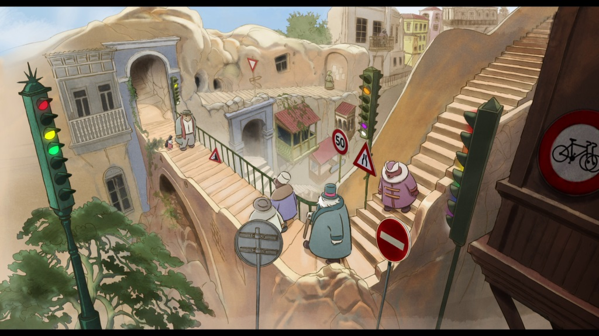

I wasn't expecting to ever see a sequel to the 2012 French animated film "Ernest and Celestine." I cetertainly didn't expect one to appear a decade later. For fans of the original, or of the books they're based on, "Ernest and Celestine - A Trip to Gibberitia" is a small miracle to exist. It was produced on a smaller budget however, and comes after a TV series with the same animation style, so there's no shortage of content to find if you are a fan."A Trip to Gibberitia" is a great complimentary film to the first one; while the first focuses mostly on the world of mice, this one focuses much more on the world of bears (Celestine is the only mouse that appears in the movie, and a running gag is of here reminding everyone that she isn't a bear). This time, Ernest and Celestine live modestly in the same house above ground, and Celestine eagerly wakes Ernest up from his winter hibernation. In her eagerness, she accidently breaks Ernest's beloved violin, a hand-crafted "Stradi-bear-ius," and the only person that would know how to fix it lives in Gibberitia, Ernest's home country. Despite a stubborn insistence from Ernest not to go there, they do eventually end up in country, seeing its unique customs and rules up close. One new law from after Ernest left is the ban on music - even singing birds are chased off by the local police. Unwittingly, the pair resist against the silly rule, and Ernest himself comes to terms with his family (the reason he was so hesitant on returning). One striking thing about Gibberitia is how much it resembles Eastern-Europe, specifically Russia, from it's mannerisms, music, and even font choices. And the movie just happened to release shortly after Russia began a full-scale invasion of Ukraine, revealing both the evil of its government, and the complacency of its citizens. Elsewhere, there are plenty of short-films from within Russia that acknowledge their culture of "not doing anything," no matter what horrific things might be occurring around them. "A Trip to Gibberitia" addresses this too: Gibberitia's national motto is "that's just how it is," a common catchphrase whenever someone points out something strange or non-sensical, and an empty reason to accept its laws, however bizarre or restrictive. Of course, this is still a family film for young audiences, but it's a film a wish all Russian children would see, in hope that they might be the ones to eventually trigger change where their parents have simply given up. The adventure is mostly light-hearted and great fun, thanks to Celestine's bright optimism, and a series of fun chases from inept police-bears and an underground music resistance. But there are also some tender moments... the production team clearly put a lot of love in this film. Watching the first film isn't a requirement, supporting the team's insistence that this isn't really "a sequel." The same delicate watercolour-with-loose-outline-style is used again in this movie, with a more willing use of blank empty space for the background in some shots, and it looks great. Like the first film, there's great attention to the character animation and expressions, even though there's a little less of it here (less mice on the screen at once, for example).  Following the "lower-budget" excuse, the all-star American voice cast for the English dub were replaced with lesser-known voice actors, but they all do a great job maintaining a similar quality, and for the two leads, matching what came before. That's a double-edged sword for Ernest, originally played by Forest Whitaker, giving a low gruff voice that's sometimes difficult to make out without subtitles (that's to say, it's the same as before, when it would have been nice to improve). Unlike Japanese anime, European animation puts a bit more effort into lip-syncing animation to voices, so the original French dub is much more natural to watch if you prefer. This story in particular has a great love for music, and the score is good, but not outstanding (and the French single, played only at the end credits, is instantly forgettable in lieu of the movie before it). "Ernest and Celestine - A Trip to Gibberitia" proves that I'd be happy watching virtually anything with the two lovable leads, each modern classics in children's characters. But that's not to say the team didn't put effort into this; on the contrary, it's clever and fun and accessible in ways most films aren't, with an important message that all audiences can understand, largely matching the quality from the first film. It's a great wholesome choice for young audiences willing to try something outside their usual American fare.
- "Ani" More reviews can be found at : https://2danicritic.github.io/ Previous review: review_Ernest_and_Celestine Next review: review_Ethel_&_Ernest